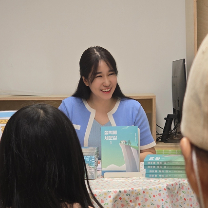
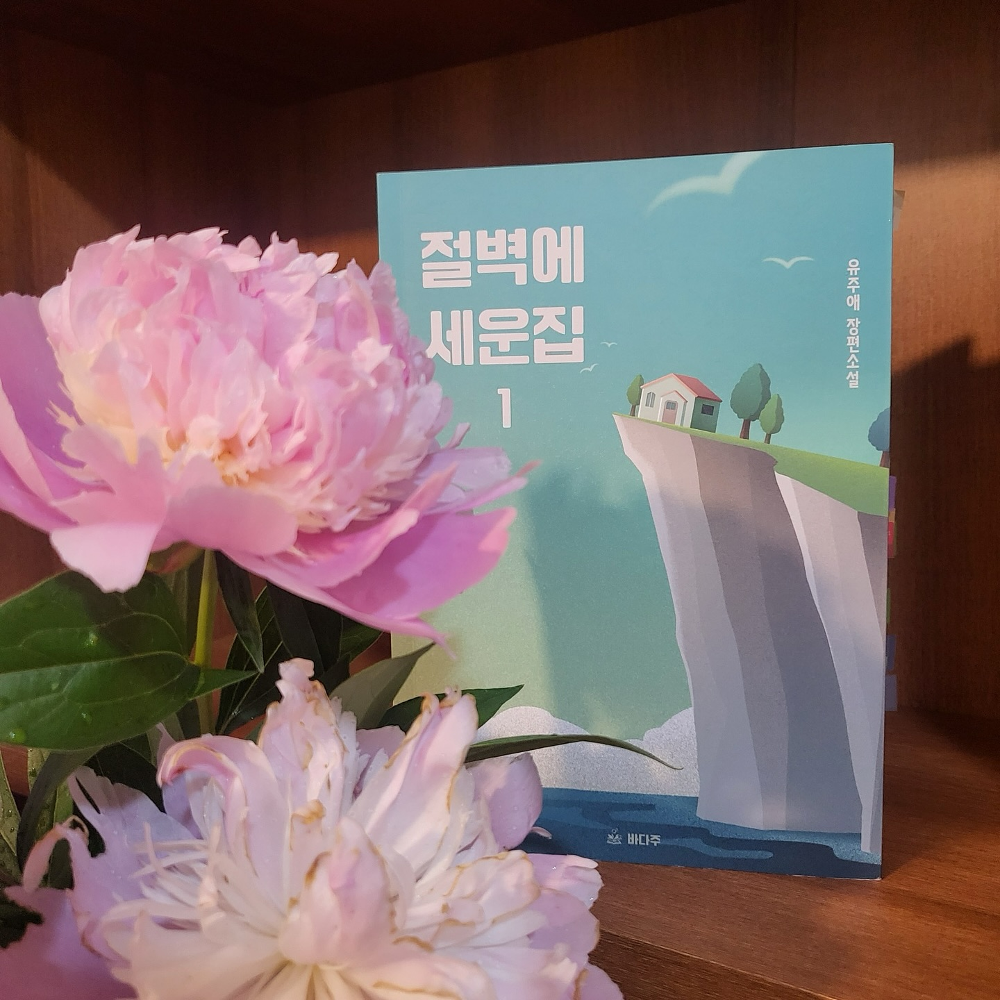
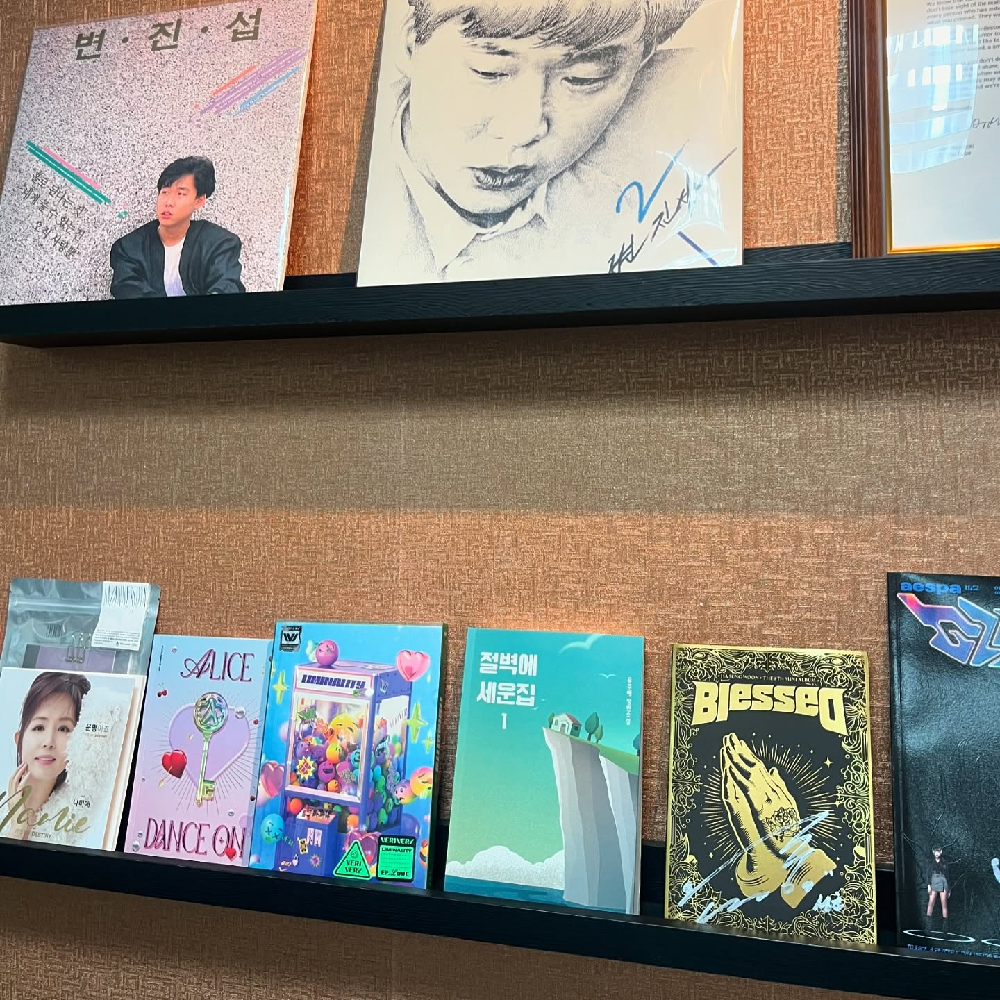
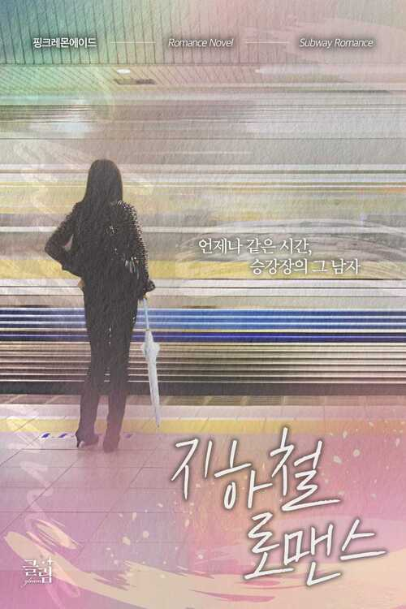

바다주는 2024년 설립한 출판 · 공연 · 음악을 잇는 스토리 IP 스튜디오입니다.
바다주는 ‘바다의 진주’ 같은 이야기를 ‘바다주(받아주)세요’라는 두 가지 의미가 있습니다.
깊이 있는 서사와 독창적인 스토리를 바탕으로, 한 편의 이야기가 책과 공연, 그리고 음악으로 확장되는 스토리 기반 크로스미디어 콘텐츠를 제작하고 있습니다.



Q2
출판사 바다주는 어떤 작가님이 계신가요?
출판사 바다주는 유주애 작가의 1인 IP 스튜디오로, 작가는 출판사 바다주(Badajoo)의 대표로서,
집필, 편집, 디자인, 출판·유통까지 직접 기획하며 창작자의 길을 확장하고 있습니다.
유주애 작가 및 대표
Q3
출판사 바다주가 출간한 책이 궁금해요!
로맨스와 스릴러를 접목시킨 장편소설 <지하철 로맨스1~5>,
베스트셀러 <절벽에 세운 집 1~2> 등의 작품이 있습니다.

지하철 로맨스
유주애 저
매일 아침 7시 44분. 한수아는 지하철 승강장 7-4로 향한다. 그곳에는 어김없이 ‘그 남자’가 있다.
절벽에 세운집1
유주애 저
『절벽에 세운 집』은 흔들리는 인간관계 내면의 상처를 치유해 나가는 과정을 섬세하게 그려낸다.